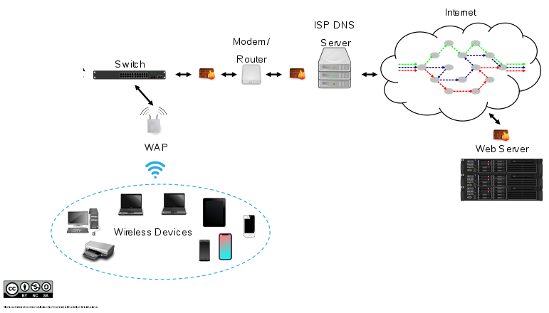
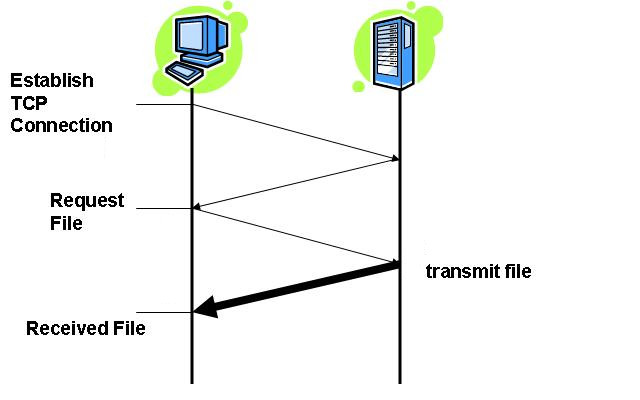
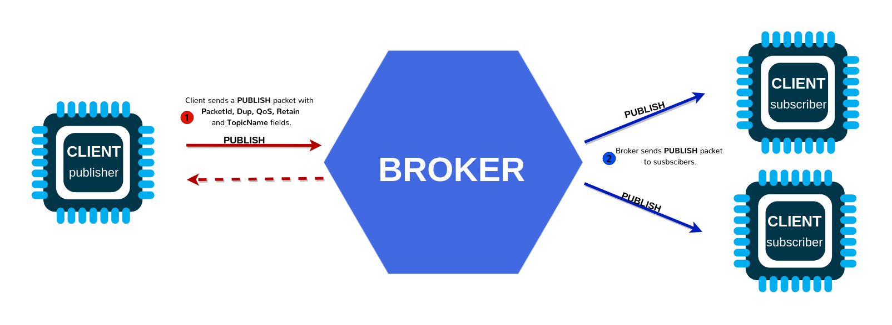
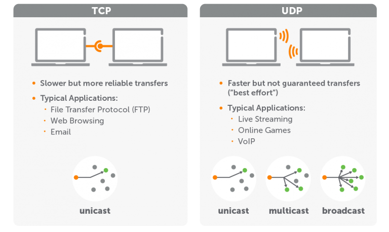

Go Further Without Wires
FOSDEM 2022
Ron Evans - @deadprogram
Ron Evans (@deadprogram)
Technologist For Hire
hybridgroup.com
Technologists
For Hire
Clients
Open Source Projects
gobot.io

gocv.io
tinygo.org
Wireless Networking
Go Without Wires (FOSDEM 2021)

Go Bluetooth
tinygo.org/bluetooth
Go Further Without Wires
Go Further Without Wires
Wireless Local Area Network
(WLAN)
Wifi
How The Internet Really Works

"The Internet"
Transmission Control Protocol /
Internet Protocol
aka
TCP/IP

Protocols
Normally you don't worry about this
import (
"net"
"net/http"
)
But What About The Metal?
TinyGo Drivers
github.com/tinygo-org/drivers
import (
"tinygo.org/x/drivers/net"
"tinygo.org/x/drivers/net/http"
"tinygo.org/x/drivers/wifinina"
)
Hello, World
Connect to an Wireless Access Point (AP)
Arduino Nano 33 IoT
Microchip SAMD21
32-bit processor
120 Mhz Cortex-M4
512K Flash
ublox Nina-W102
Dual-core Xtensa LX6
32-bit processor
240 Mhz
16MB Flash
WiFiNINA
↓
SPI
Code
Demo
HyperText Transfer Protocol (HTTP)

http
Web Client
Seeedstudio Wioterminal
Microchip SAMD51
32-bit processor
120 Mhz Cortex-M4
512K Flash
Realtek RTL8720DN
Dual-core
KM4 Arm Cortex-M4 - 200 Mhz
KM0 Arm Cortex-M0 - 20 Mhz
4MB Flash
Embedded RPC (erpc)
↓
UART
Code
Demo
Message Queuing Telemetry Transport (MQTT)

mqtt
MQTT Client
Adafruit PyPortal
Microchip ATSAMD51J20
ARM Cortex M4
32-bit processor
120 Mhz
256K RAM
ublox Nina-W102
Dual-core Xtensa LX6
240 Mhz
16MB Flash
WiFiNINA
↓
SPI
Code
Demo
User Datagram Protocol (UDP)
